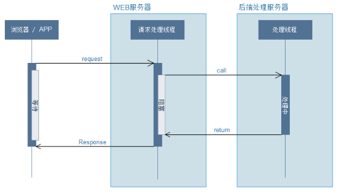
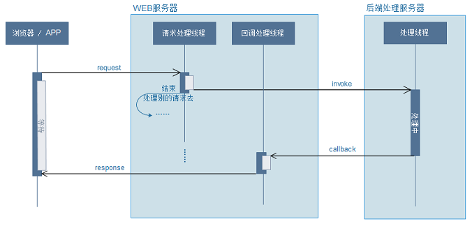
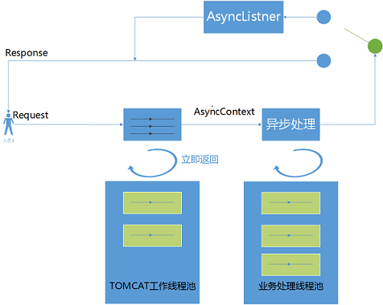
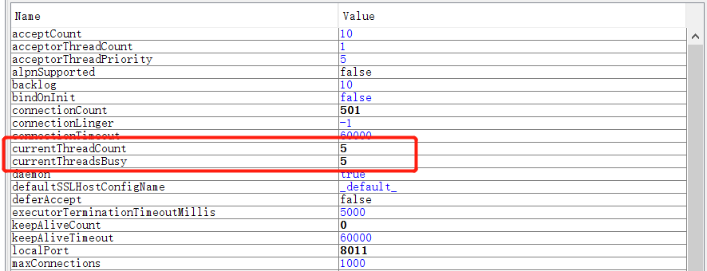
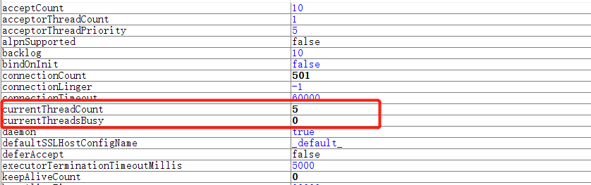
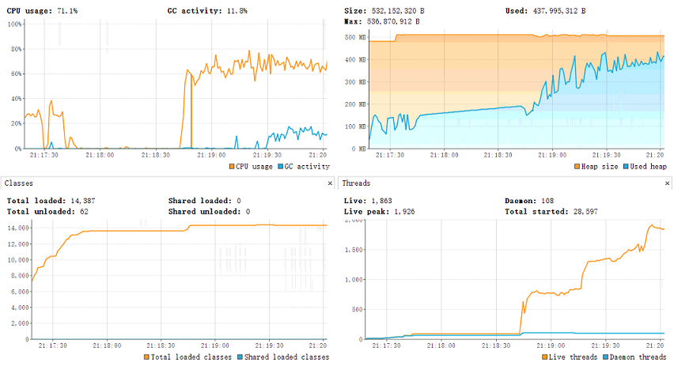
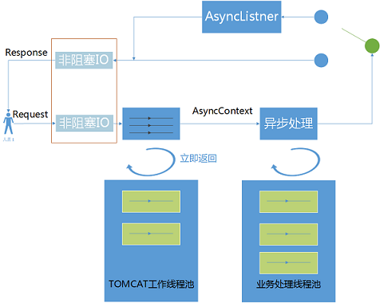

<!DOCTYPE html>
<html lang="en">
<head><meta name="generator" content="Hexo 3.8.0">
    <meta charset="utf-8">
    
    <title>
        SpringMvc异步原理及实现 |
        
        YingLong</title>
    
    
        <meta name="keywords" content="Spring，Servlet3.x">
    
    <meta name="viewport" content="width=device-width, initial-scale=1, maximum-scale=1">
    <meta name="description" content="在实际的项目中，可能会用到HTTP异步请求方式来提高系统的吞吐量。 同步请求客户端发起同步HTTP请求时，线程进入等待状态，直到接受到一个response对象或者请求超时状态 ，往返WEB服务器的过程：  HTTP请求在经过DNS服务器的域名解析，到Nginx反向代理转发到我们的WEB服务器（servlet容器，Tomcat），WEB服务器会启动一个请求处理线程来处理请求，完成资源分配处理之后，线">
<meta name="keywords" content="Spring，Servlet3.x">
<meta property="og:type" content="article">
<meta property="og:title" content="SpringMvc异步原理及实现">
<meta property="og:url" content="https://yaoyinglong.github.io/Blog/框架/Spring/SpringMvc异步/index.html">
<meta property="og:site_name" content="YingLong">
<meta property="og:description" content="在实际的项目中，可能会用到HTTP异步请求方式来提高系统的吞吐量。 同步请求客户端发起同步HTTP请求时，线程进入等待状态，直到接受到一个response对象或者请求超时状态 ，往返WEB服务器的过程：  HTTP请求在经过DNS服务器的域名解析，到Nginx反向代理转发到我们的WEB服务器（servlet容器，Tomcat），WEB服务器会启动一个请求处理线程来处理请求，完成资源分配处理之后，线">
<meta property="og:locale" content="en">
<meta property="og:image" content="https://yaoyinglong.github.io/images/框架/HTTP同步请求过程图.png">
<meta property="og:image" content="https://yaoyinglong.github.io/images/框架/HTTP异步请求过程图.png">
<meta property="og:image" content="https://yaoyinglong.github.io/images/框架/Servlet3异步流程.png">
<meta property="og:image" content="https://yaoyinglong.github.io/images/框架/同步线程阻塞Tomcat参数使用情况.png">
<meta property="og:image" content="https://yaoyinglong.github.io/images/框架/异步线程非阻塞Tomcat参数使用情况.png">
<meta property="og:image" content="https://yaoyinglong.github.io/images/框架/未自定义线程池导致线程数飙升.png">
<meta property="og:image" content="https://yaoyinglong.github.io/images/框架/Servlet3.1非阻塞IO.png">
<meta property="og:updated_time" content="2019-06-27T09:26:09.600Z">
<meta name="twitter:card" content="summary">
<meta name="twitter:title" content="SpringMvc异步原理及实现">
<meta name="twitter:description" content="在实际的项目中，可能会用到HTTP异步请求方式来提高系统的吞吐量。 同步请求客户端发起同步HTTP请求时，线程进入等待状态，直到接受到一个response对象或者请求超时状态 ，往返WEB服务器的过程：  HTTP请求在经过DNS服务器的域名解析，到Nginx反向代理转发到我们的WEB服务器（servlet容器，Tomcat），WEB服务器会启动一个请求处理线程来处理请求，完成资源分配处理之后，线">
<meta name="twitter:image" content="https://yaoyinglong.github.io/images/框架/HTTP同步请求过程图.png">
    

    

    
        <link rel="icon" href="/favicon.ico">
    

    <link rel="stylesheet" href="/libs/font-awesome/css/font-awesome.min.css">
    <link rel="stylesheet" href="/libs/open-sans/styles.css">
    <link rel="stylesheet" href="/libs/source-code-pro/styles.css">

    <link rel="stylesheet" href="/css/style.css">
    <script src="/libs/jquery/2.1.3/jquery.min.js"></script>
    <script src="/libs/jquery/plugins/cookie/1.4.1/jquery.cookie.js"></script>
    
    
        <link rel="stylesheet" href="/libs/lightgallery/css/lightgallery.min.css">
    
    
        <link rel="stylesheet" href="/libs/justified-gallery/justifiedGallery.min.css">
    
    
    
    


</head>
</html>
<body>
<div id="container">
    <header id="header">
    <div id="header-main" class="header-inner">
        <div class="outer">
            <a href="/" id="logo">
                <i class="logo"></i>
                <span class="site-title">YingLong</span>
            </a>
            <nav id="main-nav">
                
                    <a class="main-nav-link" href="/">Home</a>
                
                    <a class="main-nav-link" href="/archives">Archives</a>
                
                    <a class="main-nav-link" href="/categories">Categories</a>
                
                    <a class="main-nav-link" href="/tags">Tags</a>
                
                    <a class="main-nav-link" href="/about">About</a>
                
            </nav>
            
            <div id="search-form-wrap">
    
        <form class="search-form">
            <input type="text" class="ins-search-input search-form-input" placeholder="Search">
            <button type="submit" class="search-form-submit"></button>
        </form>
        <div class="ins-search">
    <div class="ins-search-mask"></div>
    <div class="ins-search-container">
        <div class="ins-input-wrapper">
            <input type="text" class="ins-search-input" placeholder="Type something...">
            <span class="ins-close ins-selectable"><i class="fa fa-times-circle"></i></span>
        </div>
        <div class="ins-section-wrapper">
            <div class="ins-section-container"></div>
        </div>
    </div>
</div>
<script>
    (function (window) {
        var INSIGHT_CONFIG = {
            TRANSLATION: {
                POSTS: 'Posts',
                PAGES: 'Pages',
                CATEGORIES: 'Categories',
                TAGS: 'Tags',
                UNTITLED: '(Untitled)',
            },
            ROOT_URL: '/',
            CONTENT_URL: '/content.json',
        };
        window.INSIGHT_CONFIG = INSIGHT_CONFIG;
    })(window);
</script>
<script src="/js/insight.js"></script>
    
</div>
        </div>
    </div>
    <div id="main-nav-mobile" class="header-sub header-inner">
        <table class="menu outer">
            <tr>
                
                    <td><a class="main-nav-link" href="/">Home</a></td>
                
                    <td><a class="main-nav-link" href="/archives">Archives</a></td>
                
                    <td><a class="main-nav-link" href="/categories">Categories</a></td>
                
                    <td><a class="main-nav-link" href="/tags">Tags</a></td>
                
                    <td><a class="main-nav-link" href="/about">About</a></td>
                
                <td>
                    
    <div class="search-form">
        <input type="text" class="ins-search-input search-form-input" placeholder="Search">
    </div>

                </td>
            </tr>
        </table>
    </div>
</header>

    <div class="outer">
        
        
            <aside id="sidebar">
    
        
    <div class="widget-wrap" id="categories">
        <h3 class="widget-title">
            <span>categories</span>
            &nbsp;
            <a id="allExpand" href="#">
                <i class="fa fa-angle-double-down fa-2x"></i>
            </a>
        </h3>

        
        
        
            <ul class="unstyled" id="tree">
                
                    <li class="directory">
                        <a href="#" data-role="directory">
                            <i class="fa fa-folder"></i>
                            &nbsp;
                            DB
                        </a>
                        
            <ul class="unstyled" id="tree">
                
                    <li class="file"><a href="/Blog/DB/MySQL基础/">MySQL基础</a></li>
                
                    <li class="file"><a href="/Blog/DB/MySQL常用SQL总结/">MySQL常用SQL总结</a></li>
                
            </ul>
        
                    </li>
                
                    <li class="directory">
                        <a href="#" data-role="directory">
                            <i class="fa fa-folder"></i>
                            &nbsp;
                            Git
                        </a>
                        
            <ul class="unstyled" id="tree">
                
                    <li class="file"><a href="/Blog/Git/GIt基本概念/">Git基本概念</a></li>
                
                    <li class="file"><a href="/Blog/Git/GIt常用命令/">Git常用命令</a></li>
                
                    <li class="file"><a href="/Blog/Git/分支管理理解/">分支管理理解</a></li>
                
            </ul>
        
                    </li>
                
                    <li class="directory">
                        <a href="#" data-role="directory">
                            <i class="fa fa-folder"></i>
                            &nbsp;
                            Go
                        </a>
                        
            <ul class="unstyled" id="tree">
                
                    <li class="file"><a href="/Blog/Go/Go基础/">Go基础</a></li>
                
            </ul>
        
                    </li>
                
                    <li class="directory">
                        <a href="#" data-role="directory">
                            <i class="fa fa-folder"></i>
                            &nbsp;
                            Java
                        </a>
                        
            <ul class="unstyled" id="tree">
                
                    <li class="directory">
                        <a href="#" data-role="directory">
                            <i class="fa fa-folder"></i>
                            &nbsp;
                            VM
                        </a>
                        
            <ul class="unstyled" id="tree">
                
                    <li class="file"><a href="/Blog/Java/VM/HotSpot收集算法实现/">HotSpot收集算法实现</a></li>
                
                    <li class="file"><a href="/Blog/Java/VM/JVM内存池/">JVM内存池</a></li>
                
                    <li class="file"><a href="/Blog/Java/VM/内存非配与回收策略/">内存分配与回收策略</a></li>
                
                    <li class="file"><a href="/Blog/Java/VM/Java内存区域/">Java内存区域</a></li>
                
                    <li class="file"><a href="/Blog/Java/VM/Minor&Major&Full GC/">Minor&Major&Full GC</a></li>
                
                    <li class="file"><a href="/Blog/Java/VM/OutOfMemoryError异常/">OOM异常实验</a></li>
                
                    <li class="file"><a href="/Blog/Java/VM/垃圾收集算法/">垃圾收集算法</a></li>
                
                    <li class="file"><a href="/Blog/Java/VM/堆中对象分配&布局&访问/">堆中对象分配&布局&访问</a></li>
                
                    <li class="file"><a href="/Blog/Java/VM/对象是否存活/">对象是否存活</a></li>
                
                    <li class="file"><a href="/Blog/Java/VM/类加载的时机/">类加载的时机</a></li>
                
                    <li class="file"><a href="/Blog/Java/VM/运行时栈帧结构/">运行时栈帧结构</a></li>
                
                    <li class="file"><a href="/Blog/Java/VM/垃圾收集器/">垃圾收集器</a></li>
                
                    <li class="file"><a href="/Blog/Java/VM/方法调用/">方法调用</a></li>
                
                    <li class="file"><a href="/Blog/Java/VM/字节码指令/">字节码指令</a></li>
                
                    <li class="file"><a href="/Blog/Java/VM/理解GC日志/">理解GC日志</a></li>
                
                    <li class="file"><a href="/Blog/Java/VM/类加载器/">类加载器</a></li>
                
                    <li class="file"><a href="/Blog/Java/VM/Class文件结构/">Class文件结构</a></li>
                
                    <li class="file"><a href="/Blog/Java/VM/属性表集合/">属性表集合</a></li>
                
                    <li class="file"><a href="/Blog/Java/VM/类加载过程/">类加载过程</a></li>
                
            </ul>
        
                    </li>
                
                    <li class="directory">
                        <a href="#" data-role="directory">
                            <i class="fa fa-folder"></i>
                            &nbsp;
                            基础
                        </a>
                        
            <ul class="unstyled" id="tree">
                
                    <li class="file"><a href="/Blog/Java/基础/lambda常用总结/">lambda常用总结</a></li>
                
                    <li class="file"><a href="/Blog/Java/基础/时间及日期总结/">Java8时间及日期</a></li>
                
                    <li class="file"><a href="/Blog/Java/基础/位运算/">位运算</a></li>
                
                    <li class="file"><a href="/Blog/Java/基础/HashMap源码分析JDK8/">HashMap源码分析JDK8</a></li>
                
                    <li class="file"><a href="/Blog/Java/基础/HashMap源码分析JDK7/">HashMap源码分析JDK7</a></li>
                
                    <li class="file"><a href="/Blog/Java/基础/反射基础/">反射基础</a></li>
                
                    <li class="file"><a href="/Blog/Java/基础/动态代理/">动态代理</a></li>
                
            </ul>
        
                    </li>
                
                    <li class="directory">
                        <a href="#" data-role="directory">
                            <i class="fa fa-folder"></i>
                            &nbsp;
                            工具
                        </a>
                        
            <ul class="unstyled" id="tree">
                
                    <li class="file"><a href="/Blog/Java/工具/Java中调用Groovy脚本/">Java中调用Groovy脚本</a></li>
                
                    <li class="file"><a href="/Blog/Java/工具/国密SM2/">国密SM2</a></li>
                
                    <li class="file"><a href="/Blog/Java/工具/国密SM4/">国密SM4</a></li>
                
            </ul>
        
                    </li>
                
                    <li class="directory">
                        <a href="#" data-role="directory">
                            <i class="fa fa-folder"></i>
                            &nbsp;
                            并发
                        </a>
                        
            <ul class="unstyled" id="tree">
                
                    <li class="file"><a href="/Blog/Java/并发/原子性、可见性、有序性/">原子性、可见性、有序性</a></li>
                
                    <li class="file"><a href="/Blog/Java/并发/线程安全/">线程安全</a></li>
                
                    <li class="file"><a href="/Blog/Java/并发/线程安全实现方式/">线程安全实现方式</a></li>
                
                    <li class="file"><a href="/Blog/Java/并发/ThreadLocal原理/">ThreadLocal原理</a></li>
                
            </ul>
        
                    </li>
                
                    <li class="file"><a href="/Blog/Java/JVM整体概览/">JVM整体概览</a></li>
                
            </ul>
        
                    </li>
                
                    <li class="directory">
                        <a href="#" data-role="directory">
                            <i class="fa fa-folder"></i>
                            &nbsp;
                            Linux
                        </a>
                        
            <ul class="unstyled" id="tree">
                
                    <li class="file"><a href="/Blog/Linux/Linux常用命令/">Linux常用命令</a></li>
                
                    <li class="file"><a href="/Blog/Linux/Linux常用技巧/">Linux常用技巧</a></li>
                
            </ul>
        
                    </li>
                
                    <li class="directory">
                        <a href="#" data-role="directory">
                            <i class="fa fa-folder"></i>
                            &nbsp;
                            Maven
                        </a>
                        
            <ul class="unstyled" id="tree">
                
                    <li class="file"><a href="/Blog/Maven/Maven加密JAR包/">Maven加密JAR包</a></li>
                
                    <li class="file"><a href="/Blog/Maven/Maven基础/">Maven基础</a></li>
                
                    <li class="file"><a href="/Blog/Maven/Maven常用/">Maven常用</a></li>
                
                    <li class="file"><a href="/Blog/Maven/Maven属性/">Maven属性</a></li>
                
                    <li class="file"><a href="/Blog/Maven/Maven常用工具/">Maven常用工具</a></li>
                
                    <li class="file"><a href="/Blog/Maven/Maven插件编写/">Maven插件编写</a></li>
                
                    <li class="file"><a href="/Blog/Maven/Maven生命周期/">Maven生命周期</a></li>
                
                    <li class="file"><a href="/Blog/Maven/Maven个性化打包/">Maven个性化打包</a></li>
                
                    <li class="file"><a href="/Blog/Maven/Maven仓库/">Maven仓库</a></li>
                
                    <li class="file"><a href="/Blog/Maven/Maven插件基础/">Maven插件基础</a></li>
                
                    <li class="file"><a href="/Blog/Maven/Maven聚合与继承/">Maven聚合与继承</a></li>
                
                    <li class="file"><a href="/Blog/Maven/Maven常用插件/">Maven常用插件</a></li>
                
                    <li class="file"><a href="/Blog/Maven/Maven标签全解/">Maven标签全解</a></li>
                
                    <li class="file"><a href="/Blog/Maven/Maven Assembly标签全解/">Maven Assembly标签全解</a></li>
                
            </ul>
        
                    </li>
                
                    <li class="directory">
                        <a href="#" data-role="directory">
                            <i class="fa fa-folder"></i>
                            &nbsp;
                            Python
                        </a>
                        
            <ul class="unstyled" id="tree">
                
                    <li class="file"><a href="/Blog/Python/Excel文件数据抽取/">Excel文件数据抽取</a></li>
                
            </ul>
        
                    </li>
                
                    <li class="directory">
                        <a href="#" data-role="directory">
                            <i class="fa fa-folder"></i>
                            &nbsp;
                            Test
                        </a>
                        
            <ul class="unstyled" id="tree">
                
                    <li class="file"><a href="/Blog/Test/IT测试总结/">IT测试总结</a></li>
                
                    <li class="file"><a href="/Blog/Test/JMeter日常总结/">JMeter日常总结</a></li>
                
                    <li class="file"><a href="/Blog/Test/LoadRunner日常总结/">LoadRunner日常总结</a></li>
                
                    <li class="file"><a href="/Blog/Test/UT测试总结/">UT测试总结</a></li>
                
            </ul>
        
                    </li>
                
                    <li class="directory">
                        <a href="#" data-role="directory">
                            <i class="fa fa-folder"></i>
                            &nbsp;
                            协议族
                        </a>
                        
            <ul class="unstyled" id="tree">
                
                    <li class="file"><a href="/Blog/协议族/TCPIP四层&五层模型/">TCP/IP四层&五层模型</a></li>
                
                    <li class="file"><a href="/Blog/协议族/网络基础知识/">网络基础知识</a></li>
                
                    <li class="file"><a href="/Blog/协议族/以太网/">以太网</a></li>
                
                    <li class="file"><a href="/Blog/协议族/地址解析协议/">地址解析协议ARP</a></li>
                
            </ul>
        
                    </li>
                
                    <li class="directory">
                        <a href="#" data-role="directory">
                            <i class="fa fa-folder"></i>
                            &nbsp;
                            杂记
                        </a>
                        
            <ul class="unstyled" id="tree">
                
                    <li class="file"><a href="/Blog/杂记/IDEA实用插件/">IDEA实用插件</a></li>
                
                    <li class="file"><a href="/Blog/杂记/JAVA实用工具/">JAVA实用工具</a></li>
                
                    <li class="file"><a href="/Blog/杂记/IDEA快捷的使用/">IDEA的快捷使用</a></li>
                
                    <li class="file"><a href="/Blog/杂记/Win实用工具/">Win实用工具</a></li>
                
                    <li class="file"><a href="/Blog/杂记/XSD使用总结/">XSD实用总结</a></li>
                
                    <li class="file"><a href="/Blog/杂记/SonarQube配置总结/">SonarQube配置总结</a></li>
                
            </ul>
        
                    </li>
                
                    <li class="directory open">
                        <a href="#" data-role="directory">
                            <i class="fa fa-folder-open"></i>
                            &nbsp;
                            框架
                        </a>
                        
            <ul class="unstyled" id="tree">
                
                    <li class="directory open">
                        <a href="#" data-role="directory">
                            <i class="fa fa-folder-open"></i>
                            &nbsp;
                            Spring
                        </a>
                        
            <ul class="unstyled" id="tree">
                
                    <li class="file"><a href="/Blog/框架/Spring/Spring Gzip压缩/">Spring Gzip压缩</a></li>
                
                    <li class="file"><a href="/Blog/框架/Spring/IoC容器/">IoC容器</a></li>
                
                    <li class="file"><a href="/Blog/框架/Spring/Spring整体架构/">Spring整体架构</a></li>
                
                    <li class="file"><a href="/Blog/框架/Spring/Spring知识点/">Spring知识点</a></li>
                
                    <li class="file"><a href="/Blog/框架/Spring/Spring线程池跨线程数据共享/">Spring线程池跨线程数据共享</a></li>
                
                    <li class="file"><a href="/Blog/框架/Spring/Hystrix总结/">Hystrix总结</a></li>
                
                    <li class="file active"><a href="/Blog/框架/Spring/SpringMvc异步/">SpringMvc异步原理及实现</a></li>
                
            </ul>
        
                    </li>
                
                    <li class="directory">
                        <a href="#" data-role="directory">
                            <i class="fa fa-folder"></i>
                            &nbsp;
                            常见问题
                        </a>
                        
            <ul class="unstyled" id="tree">
                
                    <li class="file"><a href="/Blog/框架/常见问题/HBase依赖冲突/">HBase依赖冲突</a></li>
                
                    <li class="file"><a href="/Blog/框架/常见问题/Maven编译后文件损坏/">Maven编译后文件损坏</a></li>
                
            </ul>
        
                    </li>
                
                    <li class="file"><a href="/Blog/框架/Redis分布式锁实现/">Redis分布式锁实现</a></li>
                
                    <li class="file"><a href="/Blog/框架/Tomcat工作原理/">Tomcat工作原理</a></li>
                
            </ul>
        
                    </li>
                
                    <li class="directory">
                        <a href="#" data-role="directory">
                            <i class="fa fa-folder"></i>
                            &nbsp;
                            算法
                        </a>
                        
            <ul class="unstyled" id="tree">
                
                    <li class="file"><a href="/Blog/算法/二叉搜索树/">二叉搜索树</a></li>
                
                    <li class="file"><a href="/Blog/算法/平衡二叉树/">平衡二叉树</a></li>
                
                    <li class="file"><a href="/Blog/算法/树基础/">树基础</a></li>
                
                    <li class="file"><a href="/Blog/算法/排序算法/">排序算法</a></li>
                
                    <li class="file"><a href="/Blog/算法/图基础/">图基础</a></li>
                
            </ul>
        
                    </li>
                
                    <li class="directory">
                        <a href="#" data-role="directory">
                            <i class="fa fa-folder"></i>
                            &nbsp;
                            设计模式
                        </a>
                        
            <ul class="unstyled" id="tree">
                
                    <li class="file"><a href="/Blog/设计模式/SOLID基本原则/">SOLID基本原则</a></li>
                
                    <li class="file"><a href="/Blog/设计模式/设计模式概览/">设计模式概览</a></li>
                
            </ul>
        
                    </li>
                
                    <li class="file"><a href="/Blog/index/">Welcome YingLong's Blog</a></li>
                
            </ul>
        
    </div>
    <script>
        $(document).ready(function () {
            var iconFolderOpenClass = 'fa-folder-open';
            var iconFolderCloseClass = 'fa-folder';
            var iconAllExpandClass = 'fa-angle-double-down';
            var iconAllPackClass = 'fa-angle-double-up';
            // Handle directory-tree expansion:
            // 左键单独展开目录
            $(document).on('click', '#categories a[data-role="directory"]', function (event) {
                event.preventDefault();

                var icon = $(this).children('.fa');
                var expanded = icon.hasClass(iconFolderOpenClass);
                var subtree = $(this).siblings('ul');
                icon.removeClass(iconFolderOpenClass).removeClass(iconFolderCloseClass);
                if (expanded) {
                    if (typeof subtree != 'undefined') {
                        subtree.slideUp({duration: 100});
                    }
                    icon.addClass(iconFolderCloseClass);
                } else {
                    if (typeof subtree != 'undefined') {
                        subtree.slideDown({duration: 100});
                    }
                    icon.addClass(iconFolderOpenClass);
                }
            });
            // 右键展开下属所有目录
            $('#categories a[data-role="directory"]').bind("contextmenu", function (event) {
                event.preventDefault();

                var icon = $(this).children('.fa');
                var expanded = icon.hasClass(iconFolderOpenClass);
                var listNode = $(this).siblings('ul');
                var subtrees = $.merge(listNode.find('li ul'), listNode);
                var icons = $.merge(listNode.find('.fa'), icon);
                icons.removeClass(iconFolderOpenClass).removeClass(iconFolderCloseClass);
                if (expanded) {
                    subtrees.slideUp({duration: 100});
                    icons.addClass(iconFolderCloseClass);
                } else {
                    subtrees.slideDown({duration: 100});
                    icons.addClass(iconFolderOpenClass);
                }
            })
            // 展开关闭所有目录按钮
            $(document).on('click', '#allExpand', function (event) {
                event.preventDefault();

                var icon = $(this).children('.fa');
                var expanded = icon.hasClass(iconAllExpandClass);
                icon.removeClass(iconAllExpandClass).removeClass(iconAllPackClass);
                if (expanded) {
                    $('#sidebar .fa.fa-folder').removeClass('fa-folder').addClass('fa-folder-open')
                    $('#categories li ul').slideDown({duration: 100});
                    icon.addClass(iconAllPackClass);
                } else {
                    $('#sidebar .fa.fa-folder-open').removeClass('fa-folder-open').addClass('fa-folder')
                    $('#categories li ul').slideUp({duration: 100});
                    icon.addClass(iconAllExpandClass);
                }
            });
        });
    </script>

    
    <div id="toTop" class="fa fa-angle-up"></div>
</aside>
        
        <section id="main"><article id="post-框架/Spring/SpringMvc异步" class="article article-type-post" itemscope itemprop="blogPost">
    <div class="article-inner">
        
        
            <header class="article-header">
                
                    <div class="article-meta">
                        
    <div class="article-category">
        <i class="fa fa-folder"></i>
        <a class="article-category-link" href="/categories/框架/">框架</a><i class="fa fa-angle-right"></i><a class="article-category-link" href="/categories/框架/Spring/">Spring</a>
    </div>

                        
    <div class="article-tag">
        <i class="fa fa-tag"></i>
        <a class="tag-link" href="/tags/Spring，Servlet3-x/">Spring，Servlet3.x</a>
    </div>

                        
    <div class="article-date">
        <i class="fa fa-calendar"></i>
        <a href="/Blog/框架/Spring/SpringMvc异步/">
            <time datetime="2018-08-05T16:00:00.000Z" itemprop="datePublished">2018-08-06</time>
        </a>
    </div>


                        
                    </div>
                
                
    
        <h1 class="article-title" itemprop="name">
            SpringMvc异步原理及实现
        </h1>
    

            </header>
        
        
        <div class="article-entry" itemprop="articleBody">
            
            
                    
            
            
                <p>在实际的项目中，可能会用到HTTP异步请求方式来提高系统的吞吐量。</p>
<h3 id="同步请求"><a href="#同步请求" class="headerlink" title="同步请求"></a>同步请求</h3><p>客户端发起<strong>同步<code>HTTP</code></strong>请求时，线程进入等待状态，直到接受到一个<code>response</code>对象或者请求超时状态 ，往返WEB服务器的过程：</p>
<p></p>
<p>HTTP请求在经过DNS服务器的域名解析，到Nginx反向代理转发到我们的WEB服务器（servlet容器，Tomcat），WEB服务器会<strong>启动一个请求处理线程</strong>来处理请求，完成资源分配处理之后，线程起调后端的处理线程，同时WEB服务器的线程将会进入<strong>阻塞状态</strong>，直到后端的线程处理完毕，WEB服务器释放请求处理线程的资源，同时返回response对象，客户端接收到response对象，整个请求完成。 </p>
<p>若后端处理服务器中进行了大量的IO操作，数据库操作，或者跨网调用等<strong>耗时操作</strong>，导致请求处理线程进入<strong>长时间的阻塞</strong>。因为<strong>WEB服务器的请求处理线程条个数是有限</strong>的，如果同时大量的请求阻塞在WEB服务器中，新的请求将会处于等待状态，甚至<strong>服务不可用</strong>，connection refused。 </p>
<h3 id="异步请求"><a href="#异步请求" class="headerlink" title="异步请求"></a>异步请求</h3><p>Servlet3的异步web机制的引入，改造接口服务，可以<strong>让请求线程(IO线程)和业务处理线程分开，进而对业务进行线程池隔离</strong>。 解决<strong>tomcat线程池资源消耗，频繁gc，高io，堆内存上升</strong> 。还可以<strong>根据业务重要性进行业务分级，然后再把线程池分级</strong> 。还可以<strong>根据这些分级做其它操作比如监控和降级处理</strong>。 </p>
<p>请求处理线程对后台处理的调用使用了<strong>invoke</strong>的方式，调<strong>invoke方法后直接返回</strong>不等待，请求处理线程就<strong>释放</strong>了，它可以接着去<strong>处理别的请求</strong>，当后端处理完成后，会<strong>钩起一个回调处理线程</strong>来处理调用的结果，这个<strong>回调处理线程跟请求处理线程也许都是线程池中的某个线程，相互间可以完全没有关系</strong>，由这个回调处理线程向浏览器返回内容。</p>
<p>带来的改进是显而易见的，请求处理线程不需要阻塞了，它的能力得到了更充分的使用，带来了服务器<strong>吞吐能力的提升</strong>。下图是异步请求过程图：</p>
<p></p>
<h3 id="Servlet3异步流程"><a href="#Servlet3异步流程" class="headerlink" title="Servlet3异步流程"></a>Servlet3异步流程</h3><p></p>
<p>接收到request请求之后，由<strong>Tomcat工作线程从HttpServletRequest中获得一个异步上下文AsyncContext对象</strong>，然后<strong>由Tomcat工作线程把AsyncContext对象传递给业务处理线程</strong>，同时<strong>Tomcat工作线程归还到工作线程池</strong>，这一步就是异步开始。在业务处理线程中完成业务逻辑的处理，生成response返回给客户端。在<strong><code>Servlet3.0</code></strong>中虽然处理请求可以实现异步，<strong>但是InputStream和OutputStream的IO操作还是阻塞的，当数据量大的request body 或者 response body的时候，就会导致不必要的等待。从Servlet3.1以后增加了非阻塞IO</strong>，需要tomcat8.x支持。 </p>
<p>Servlet3的异步使用步骤：</p>
<ul>
<li>声明Servlet，<strong>增加asyncSupported属性</strong>，开启异步支持。<strong><code>@WebServlet(urlPatterns = &quot;/simpleAsync&quot;, asyncSupported = true)</code></strong> </li>
<li>通过request获取<strong>异步上下文<code>AsyncContext</code></strong>。<strong><code>AsyncContext asyncCtx = request.startAsync()</code></strong>; </li>
<li>开启业务逻辑处理线程，并<strong>将<code>AsyncContext</code> 传递给业务线程</strong>。<strong><code>executor.execute(new AsyncRequestProcessor(asyncCtx, secs));</code></strong> </li>
<li>在异步业务逻辑处理线程中，通过asyncContext获取request和response，处理对应的业务。</li>
<li>业务逻辑处理线程处理完成逻辑之后，<strong>调用<code>AsyncContext</code> 的<code>complete</code>方法</strong>。asyncContext.complete();从而结束该次异步线程处理。 </li>
</ul>
<h3 id="同步异步对比"><a href="#同步异步对比" class="headerlink" title="同步异步对比"></a>同步异步对比</h3><p>实际写了一个固定延时10秒的Demo，Tomcat的参数设置如下：</p>
<figure class="highlight yaml"><table><tr><td class="gutter"><pre><span class="line">1</span><br><span class="line">2</span><br><span class="line">3</span><br><span class="line">4</span><br></pre></td><td class="code"><pre><span class="line"><span class="attr">tomcat:</span></span><br><span class="line"><span class="attr">    max-threads:</span> <span class="number">5</span></span><br><span class="line"><span class="attr">    accept-count:</span> <span class="number">10</span></span><br><span class="line"><span class="attr">    max-connections:</span> <span class="number">1000</span></span><br></pre></td></tr></table></figure>
<p>在500的并发下分别对同步和异步请求进行了测试，通过<strong><code>MBean</code></strong>对<strong>Tomcat参数</strong>进行监控</p>
<ul>
<li>同步情况下<strong><code>currentThreadsBusy</code></strong>参数始终是与<strong>最大线程数</strong>一致，说明线程一致未释放，会导致请求一致阻塞</li>
<li>异步情况由于后台是异步处理的线程马上就释放了，故<strong><code>currentThreadsBusy</code>基本上都是<code>0</code></strong>。在某些情况下能够极大的提升系统吞吐量。</li>
</ul>
<p>将Tomcat业务线程池的压力转移到系统自定义线程池中。使得更加可控，即使变更应用服务器系统任然兼容。</p>
<p></p>
<p></p>
<h3 id="Spring异步"><a href="#Spring异步" class="headerlink" title="Spring异步"></a>Spring异步</h3><p><strong><code>Spring MVC 3.2</code></strong>开始引入了<strong>基于<code>Servlet 3</code>的异步请求处理</strong>。相比以前，控制器方法已经不一定需要返回一个值，而是可以返回一个<strong><code>java.util.concurrent.Callable</code></strong>对象，并通过<code>Spring MVC</code>所管理的线程来产生返回值。 同时<code>Servlet</code>容器的主线程则可以<strong>退出并释放其资源</strong>了，同时也允许容器去处理其他的请求。通过一个<strong><code>TaskExecutor</code></strong>，<code>Spring MVC</code>可以在另外的线程中调用<strong><code>Callable</code></strong>。当<code>Callable</code>返回时，请求再携带<code>Callable</code>返回的值，<strong>再次被分配到<code>Servlet</code>容器中</strong>恢复处理流程。 </p>
<p>另一个选择，是让控制器方法返回一个<strong><code>DeferredResult</code></strong>实例。该场景下，返回值可由任何一个线程产生，也包括那些不是由Spring MVC管理的线程。 返回值可能是为了响应某些外部事件所产生的，比如一条JMS的消息，一个计划任务 。</p>
<h5 id="Callable异步请求"><a href="#Callable异步请求" class="headerlink" title="Callable异步请求"></a><code>Callable</code>异步请求</h5><ul>
<li>控制器先<strong>返回一个<code>Callable</code>对象</strong></li>
<li>Spring MVC开始进行异步处理，并把该<code>Callable</code>对象提交给另一个独立线程的执行器<strong><code>TaskExecutor</code></strong>处理</li>
<li><strong><code>DispatcherServlet</code>和所有过滤器都退出Servlet容器线程</strong>，但此时方法的<strong>响应对象仍未返回</strong></li>
<li><code>Callable</code>对象最终产生一个返回结果，此时<strong>Spring MVC会重新把请求分派回Servlet容器，恢复处理</strong></li>
<li><strong><code>DispatcherServlet</code>再次被调用</strong>，恢复对<code>Callable</code>异步处理所返回结果的处理</li>
</ul>
<h5 id="DeferredResult异步请求"><a href="#DeferredResult异步请求" class="headerlink" title="DeferredResult异步请求"></a><code>DeferredResult</code>异步请求</h5><ul>
<li>控制器先返回一个<strong><code>DeferredResult</code>对象</strong>，并把它<strong>存取在内存（队列或列表等）中</strong>以便存取</li>
<li>Spring MVC开始进行异步处理</li>
<li><code>DispatcherServlet</code>和所有过滤器都退出Servlet容器线程，但此时方法的响应对象仍未返回</li>
<li><strong>由处理该请求的线程对 <code>DeferredResult</code>进行设值</strong>，然后Spring MVC会重新把请求分派回Servlet容器，恢复处理</li>
<li><code>DispatcherServlet</code>再次被调用，恢复对该异步返回结果的处理</li>
</ul>
<p>SpringMvc异步实现方式一：</p>
<figure class="highlight java"><table><tr><td class="gutter"><pre><span class="line">1</span><br><span class="line">2</span><br><span class="line">3</span><br><span class="line">4</span><br><span class="line">5</span><br><span class="line">6</span><br><span class="line">7</span><br><span class="line">8</span><br><span class="line">9</span><br><span class="line">10</span><br><span class="line">11</span><br><span class="line">12</span><br><span class="line">13</span><br><span class="line">14</span><br><span class="line">15</span><br><span class="line">16</span><br><span class="line">17</span><br><span class="line">18</span><br><span class="line">19</span><br><span class="line">20</span><br><span class="line">21</span><br><span class="line">22</span><br></pre></td><td class="code"><pre><span class="line"><span class="function"><span class="keyword">public</span> Callable&lt;String&gt; <span class="title">process</span><span class="params">(HttpServletResponse response)</span> </span>&#123;</span><br><span class="line">    <span class="keyword">return</span> () -&gt; &#123;</span><br><span class="line">        response.setContentType(<span class="string">"text/plain;charset=utf-8"</span>);</span><br><span class="line">        response.getWriter().write(<span class="string">"响应内容"</span>);</span><br><span class="line">        response.getWriter().close();</span><br><span class="line">        <span class="keyword">return</span> <span class="keyword">null</span>;</span><br><span class="line">    &#125;;</span><br><span class="line">&#125;</span><br><span class="line"></span><br><span class="line"><span class="comment">// taskService是一个@Service注解类</span></span><br><span class="line"><span class="keyword">public</span> Callable&lt;Map&lt;String, Object&gt;&gt; process() &#123;</span><br><span class="line">    Callable&lt;Map&lt;String, Object&gt;&gt; callable = taskService::execute;</span><br><span class="line">    <span class="keyword">return</span> callable;</span><br><span class="line">&#125;</span><br><span class="line"></span><br><span class="line"><span class="comment">// taskService是一个@Service注解类</span></span><br><span class="line"><span class="keyword">public</span> Callable&lt;Map&lt;String, Object&gt;&gt; process() &#123;</span><br><span class="line">    Callable&lt;Map&lt;String, Object&gt;&gt; callable = () -&gt; &#123;</span><br><span class="line">        <span class="keyword">return</span> taskService.execute();</span><br><span class="line">    &#125;;</span><br><span class="line">    <span class="keyword">return</span> callable;</span><br><span class="line">&#125;</span><br></pre></td></tr></table></figure>
<p>SpringMvc异步实现方式二：</p>
<figure class="highlight java"><table><tr><td class="gutter"><pre><span class="line">1</span><br><span class="line">2</span><br><span class="line">3</span><br><span class="line">4</span><br><span class="line">5</span><br><span class="line">6</span><br><span class="line">7</span><br><span class="line">8</span><br><span class="line">9</span><br><span class="line">10</span><br><span class="line">11</span><br></pre></td><td class="code"><pre><span class="line"><span class="comment">// taskService是一个@Service注解类</span></span><br><span class="line"><span class="function"><span class="keyword">public</span> WebAsyncTask <span class="title">process</span><span class="params">()</span> </span>&#123;</span><br><span class="line">    Callable&lt;Map&lt;String, Object&gt;&gt; callable = taskService::execute;</span><br><span class="line">    <span class="keyword">return</span> <span class="keyword">new</span> WebAsyncTask&lt;&gt;(<span class="number">20000</span>, callable);</span><br><span class="line">&#125;</span><br><span class="line"></span><br><span class="line"><span class="comment">// taskService是一个@Service注解类</span></span><br><span class="line"><span class="function"><span class="keyword">public</span> WebAsyncTask <span class="title">process</span><span class="params">()</span> </span>&#123;</span><br><span class="line">    Callable&lt;Map&lt;String, Object&gt;&gt; callable = taskService::execute;</span><br><span class="line">    <span class="keyword">return</span> <span class="keyword">new</span> WebAsyncTask&lt;&gt;(callable);</span><br><span class="line">&#125;</span><br></pre></td></tr></table></figure>
<p>SpringMvc异步实现方式三：</p>
<figure class="highlight java"><table><tr><td class="gutter"><pre><span class="line">1</span><br><span class="line">2</span><br><span class="line">3</span><br><span class="line">4</span><br><span class="line">5</span><br><span class="line">6</span><br></pre></td><td class="code"><pre><span class="line"><span class="keyword">public</span> DeferredResult&lt;Map&lt;String, Object&gt;&gt; process() &#123;</span><br><span class="line">    DeferredResult&lt;Map&lt;String, Object&gt;&gt; deferredResult = <span class="keyword">new</span> DeferredResult&lt;&gt;();</span><br><span class="line">    CompletableFuture.supplyAsync(taskService::execute)</span><br><span class="line">        .whenCompleteAsync((result, throwable) -&gt; deferredResult.setResult(result));</span><br><span class="line">    <span class="keyword">return</span> deferredResult;</span><br><span class="line">&#125;</span><br></pre></td></tr></table></figure>
<p>方式一和方式二Spring返回的<strong><code>Callable</code></strong>被<strong><code>RequestMappingHandlerAdapter</code></strong>拦截，使用<strong><code>SimpleAsyncTaskExecutor</code></strong>线程池处理，每当任务被提交到此线程池时，线程池产生一个新的线程去执行Callable中的代码， 每次都产生新的线程而且没有上上限(<strong>默认没有上限</strong>的，可以设置concurrencyLimit属性来设置线程数的大小)  但：<strong><code>SimpleAsyncTaskExecutor</code> 线程池性能不好，可使用自定义的线程池来代替</strong>。</p>
<p>方式三使用的是<strong><code>CompletableFuture.supplyAsync</code></strong>，在<strong><code>completablefuture</code></strong>的<strong><code>supplyasync</code></strong>方法将在<strong><code>ForkJoinPool</code></strong>池运行任务。也可以使用任何其他的线程池来执行。</p>
<p>若不自定线程池，<strong>MvcAsync</strong>线程数会飙涨：</p>
<p></p>
<p>自定义MVC Callable线程池：</p>
<figure class="highlight java"><table><tr><td class="gutter"><pre><span class="line">1</span><br><span class="line">2</span><br><span class="line">3</span><br><span class="line">4</span><br><span class="line">5</span><br><span class="line">6</span><br><span class="line">7</span><br><span class="line">8</span><br><span class="line">9</span><br><span class="line">10</span><br><span class="line">11</span><br><span class="line">12</span><br><span class="line">13</span><br><span class="line">14</span><br><span class="line">15</span><br><span class="line">16</span><br><span class="line">17</span><br><span class="line">18</span><br><span class="line">19</span><br><span class="line">20</span><br><span class="line">21</span><br><span class="line">22</span><br><span class="line">23</span><br><span class="line">24</span><br><span class="line">25</span><br><span class="line">26</span><br><span class="line">27</span><br><span class="line">28</span><br><span class="line">29</span><br><span class="line">30</span><br><span class="line">31</span><br><span class="line">32</span><br><span class="line">33</span><br></pre></td><td class="code"><pre><span class="line"><span class="meta">@Bean</span></span><br><span class="line"><span class="meta">@ConfigurationProperties</span>(prefix = <span class="string">"spring.task.mvcPool"</span>)</span><br><span class="line"><span class="function"><span class="keyword">public</span> TaskPoolConfig <span class="title">mvcPoolConfig</span><span class="params">()</span> </span>&#123;</span><br><span class="line">    <span class="keyword">return</span> <span class="keyword">new</span> TaskPoolConfig();</span><br><span class="line">&#125;</span><br><span class="line"></span><br><span class="line"><span class="meta">@Bean</span></span><br><span class="line"><span class="function"><span class="keyword">public</span> AsyncTaskExecutor <span class="title">mvcTaskExecutor</span><span class="params">(TaskPoolConfig mvcPoolConfig)</span> </span>&#123;</span><br><span class="line">    ThreadPoolTaskExecutor threadPool = <span class="keyword">new</span> ThreadPoolTaskExecutor();</span><br><span class="line">    threadPool.setCorePoolSize(mvcPoolConfig.getCorePoolSize());</span><br><span class="line">    threadPool.setMaxPoolSize(mvcPoolConfig.getMaxPoolSize());</span><br><span class="line">    threadPool.setQueueCapacity(mvcPoolConfig.getQueueCapacity());</span><br><span class="line">    threadPool.setAllowCoreThreadTimeOut(mvcPoolConfig.isAllowCoreThreadTimeOut());</span><br><span class="line">    threadPool.setWaitForTasksToCompleteOnShutdown(</span><br><span class="line">        mvcPoolConfig.isWaitForTasksToCompleteOnShutdown());</span><br><span class="line">    threadPool.setKeepAliveSeconds(mvcPoolConfig.getKeepAliveSeconds());</span><br><span class="line">    threadPool.setThreadNamePrefix(<span class="string">"Mvc-Thread-"</span>);</span><br><span class="line"></span><br><span class="line">    threadPool.setRejectedExecutionHandler(rejectedExecutionHandler);</span><br><span class="line">    threadPool.initialize();</span><br><span class="line">    <span class="keyword">return</span> threadPool;</span><br><span class="line">&#125;</span><br><span class="line"></span><br><span class="line"><span class="meta">@Bean</span></span><br><span class="line"><span class="function"><span class="keyword">public</span> WebMvcConfigurerAdapter <span class="title">webMvcConfigurerAdapter</span><span class="params">(AsyncTaskExecutor mvcTaskExecutor)</span> </span>&#123;</span><br><span class="line">    <span class="keyword">return</span> <span class="keyword">new</span> WebMvcConfigurerAdapter() &#123;</span><br><span class="line">        <span class="meta">@Override</span></span><br><span class="line">        <span class="function"><span class="keyword">public</span> <span class="keyword">void</span> <span class="title">configureAsyncSupport</span><span class="params">(AsyncSupportConfigurer configurer)</span> </span>&#123;</span><br><span class="line">            configurer.setTaskExecutor(mvcTaskExecutor);</span><br><span class="line">            <span class="keyword">super</span>.configureAsyncSupport(configurer);</span><br><span class="line">        &#125;</span><br><span class="line">    &#125;;</span><br><span class="line">&#125;</span><br></pre></td></tr></table></figure>
<p>请求由Tomcat业务线程池转移到系统自定义线程池中，从下面的示例中可以明显得看出Tomcat的处理线程非常快的就结束了，而由自定义线程池中的线程去处理任务，等任务结束后再由Tomcat线程响应给用户：</p>
<figure class="highlight java"><table><tr><td class="gutter"><pre><span class="line">1</span><br><span class="line">2</span><br><span class="line">3</span><br><span class="line">4</span><br><span class="line">5</span><br><span class="line">6</span><br><span class="line">7</span><br><span class="line">8</span><br><span class="line">9</span><br><span class="line">10</span><br><span class="line">11</span><br><span class="line">12</span><br><span class="line">13</span><br><span class="line">14</span><br><span class="line">15</span><br><span class="line">16</span><br><span class="line">17</span><br></pre></td><td class="code"><pre><span class="line">[nio-<span class="number">8011</span>-exec-<span class="number">4</span>] c.i.ent.controller.DashboardController   : async start</span><br><span class="line">[nio-<span class="number">8011</span>-exec-<span class="number">4</span>] c.i.ent.controller.DashboardController   : async end</span><br><span class="line">[nio-<span class="number">8011</span>-exec-<span class="number">3</span>] c.i.ent.controller.DashboardController   : async start</span><br><span class="line">[nio-<span class="number">8011</span>-exec-<span class="number">3</span>] c.i.ent.controller.DashboardController   : async end</span><br><span class="line">[nio-<span class="number">8011</span>-exec-<span class="number">5</span>] c.i.ent.controller.DashboardController   : async start</span><br><span class="line">[nio-<span class="number">8011</span>-exec-<span class="number">5</span>] c.i.ent.controller.DashboardController   : async end</span><br><span class="line">[nio-<span class="number">8011</span>-exec-<span class="number">2</span>] c.i.ent.controller.DashboardController   : async start</span><br><span class="line">[nio-<span class="number">8011</span>-exec-<span class="number">2</span>] c.i.ent.controller.DashboardController   : async end</span><br><span class="line">[   Mvc-Thread-<span class="number">4</span>] c.i.ent.service.impl.TaskServiceImpl     : Mvc-Thread-<span class="number">4</span>执行进度:task：<span class="number">0</span>/<span class="number">10</span></span><br><span class="line">[   Mvc-Thread-<span class="number">2</span>] c.i.ent.service.impl.TaskServiceImpl     : Mvc-Thread-<span class="number">2</span>执行进度:task：<span class="number">0</span>/<span class="number">10</span></span><br><span class="line">[   Mvc-Thread-<span class="number">7</span>] c.i.ent.service.impl.TaskServiceImpl     : Mvc-Thread-<span class="number">7</span>执行进度:task：<span class="number">0</span>/<span class="number">10</span></span><br><span class="line">[   Mvc-Thread-<span class="number">5</span>] c.i.ent.service.impl.TaskServiceImpl     : Mvc-Thread-<span class="number">5</span>执行进度:task：<span class="number">0</span>/<span class="number">10</span></span><br><span class="line">[   Mvc-Thread-<span class="number">3</span>] c.i.ent.service.impl.TaskServiceImpl     : Mvc-Thread-<span class="number">3</span>执行进度:task：<span class="number">0</span>/<span class="number">10</span></span><br><span class="line">[   Mvc-Thread-<span class="number">1</span>] c.i.ent.service.impl.TaskServiceImpl     : Mvc-Thread-<span class="number">1</span>执行进度:task：<span class="number">0</span>/<span class="number">10</span></span><br><span class="line">[   Mvc-Thread-<span class="number">6</span>] c.i.ent.service.impl.TaskServiceImpl     : Mvc-Thread-<span class="number">6</span>执行进度:task：<span class="number">0</span>/<span class="number">10</span></span><br><span class="line">[   Mvc-Thread-<span class="number">8</span>] c.i.ent.service.impl.TaskServiceImpl     : Mvc-Thread-<span class="number">8</span>执行进度:task：<span class="number">0</span>/<span class="number">10</span></span><br><span class="line">[   Mvc-Thread-<span class="number">9</span>] c.i.ent.service.impl.TaskServiceImpl     : Mvc-Thread-<span class="number">9</span>执行进度:task：<span class="number">0</span>/<span class="number">10</span></span><br></pre></td></tr></table></figure>
<h3 id="异步多线程池"><a href="#异步多线程池" class="headerlink" title="异步多线程池"></a>异步多线程池</h3><p>在实际中可能会用到不同的异步接口使用不同的线程池，以下代码是自定义多个线程池给不同的接口使用的示例代码：</p>
<p>多线程池的配置如下，这里做了快、中、慢三个线程池：</p>
<figure class="highlight yaml"><table><tr><td class="gutter"><pre><span class="line">1</span><br><span class="line">2</span><br><span class="line">3</span><br><span class="line">4</span><br><span class="line">5</span><br><span class="line">6</span><br><span class="line">7</span><br><span class="line">8</span><br><span class="line">9</span><br><span class="line">10</span><br><span class="line">11</span><br><span class="line">12</span><br><span class="line">13</span><br><span class="line">14</span><br><span class="line">15</span><br><span class="line">16</span><br><span class="line">17</span><br><span class="line">18</span><br><span class="line">19</span><br><span class="line">20</span><br></pre></td><td class="code"><pre><span class="line"><span class="attr">spring:</span></span><br><span class="line"><span class="attr">  task:</span></span><br><span class="line"><span class="attr">    slowMvcPool:</span></span><br><span class="line"><span class="attr">      corePoolSize:</span> <span class="number">10</span></span><br><span class="line"><span class="attr">      maxPoolSize:</span> <span class="number">20</span></span><br><span class="line"><span class="attr">      queueCapacity:</span> <span class="number">125</span></span><br><span class="line"><span class="attr">      keepAliveSeconds:</span> <span class="number">60</span></span><br><span class="line"><span class="attr">      allowCoreThreadTimeOut:</span> <span class="literal">true</span></span><br><span class="line"><span class="attr">    middleMvcPool:</span></span><br><span class="line"><span class="attr">      corePoolSize:</span> <span class="number">20</span></span><br><span class="line"><span class="attr">      maxPoolSize:</span> <span class="number">40</span></span><br><span class="line"><span class="attr">      queueCapacity:</span> <span class="number">250</span></span><br><span class="line"><span class="attr">      keepAliveSeconds:</span> <span class="number">60</span></span><br><span class="line"><span class="attr">      allowCoreThreadTimeOut:</span> <span class="literal">true</span></span><br><span class="line"><span class="attr">    fastMvcPool:</span></span><br><span class="line"><span class="attr">      corePoolSize:</span> <span class="number">40</span></span><br><span class="line"><span class="attr">      maxPoolSize:</span> <span class="number">80</span></span><br><span class="line"><span class="attr">      queueCapacity:</span> <span class="number">500</span></span><br><span class="line"><span class="attr">      keepAliveSeconds:</span> <span class="number">60</span></span><br><span class="line"><span class="attr">      allowCoreThreadTimeOut:</span> <span class="literal">true</span></span><br></pre></td></tr></table></figure>
<p>通过@Bean方式将各个线程池的参数注入到Spring中：</p>
<figure class="highlight java"><table><tr><td class="gutter"><pre><span class="line">1</span><br><span class="line">2</span><br><span class="line">3</span><br><span class="line">4</span><br><span class="line">5</span><br><span class="line">6</span><br><span class="line">7</span><br><span class="line">8</span><br><span class="line">9</span><br><span class="line">10</span><br><span class="line">11</span><br><span class="line">12</span><br><span class="line">13</span><br><span class="line">14</span><br><span class="line">15</span><br><span class="line">16</span><br><span class="line">17</span><br><span class="line">18</span><br><span class="line">19</span><br><span class="line">20</span><br><span class="line">21</span><br><span class="line">22</span><br><span class="line">23</span><br><span class="line">24</span><br><span class="line">25</span><br><span class="line">26</span><br><span class="line">27</span><br><span class="line">28</span><br><span class="line">29</span><br><span class="line">30</span><br><span class="line">31</span><br><span class="line">32</span><br><span class="line">33</span><br><span class="line">34</span><br><span class="line">35</span><br><span class="line">36</span><br><span class="line">37</span><br><span class="line">38</span><br><span class="line">39</span><br><span class="line">40</span><br><span class="line">41</span><br><span class="line">42</span><br><span class="line">43</span><br><span class="line">44</span><br><span class="line">45</span><br><span class="line">46</span><br><span class="line">47</span><br><span class="line">48</span><br><span class="line">49</span><br><span class="line">50</span><br><span class="line">51</span><br><span class="line">52</span><br><span class="line">53</span><br><span class="line">54</span><br><span class="line">55</span><br><span class="line">56</span><br><span class="line">57</span><br><span class="line">58</span><br><span class="line">59</span><br><span class="line">60</span><br><span class="line">61</span><br><span class="line">62</span><br><span class="line">63</span><br><span class="line">64</span><br><span class="line">65</span><br><span class="line">66</span><br><span class="line">67</span><br><span class="line">68</span><br></pre></td><td class="code"><pre><span class="line"><span class="meta">@Bean</span></span><br><span class="line"><span class="meta">@ConfigurationProperties</span>(prefix = <span class="string">"spring.task.fastMvcPool"</span>)</span><br><span class="line"><span class="function"><span class="keyword">public</span> TaskPoolConfig <span class="title">fastMvcPoolConfig</span><span class="params">()</span> </span>&#123;</span><br><span class="line">    <span class="keyword">return</span> <span class="keyword">new</span> TaskPoolConfig();</span><br><span class="line">&#125;</span><br><span class="line"></span><br><span class="line"><span class="meta">@Bean</span></span><br><span class="line"><span class="meta">@ConfigurationProperties</span>(prefix = <span class="string">"spring.task.middleMvcPool"</span>)</span><br><span class="line"><span class="function"><span class="keyword">public</span> TaskPoolConfig <span class="title">middleMvcPoolConfig</span><span class="params">()</span> </span>&#123;</span><br><span class="line">    <span class="keyword">return</span> <span class="keyword">new</span> TaskPoolConfig();</span><br><span class="line">&#125;</span><br><span class="line"></span><br><span class="line"><span class="meta">@Bean</span></span><br><span class="line"><span class="meta">@ConfigurationProperties</span>(prefix = <span class="string">"spring.task.slowMvcPool"</span>)</span><br><span class="line"><span class="function"><span class="keyword">public</span> TaskPoolConfig <span class="title">slowMvcPoolConfig</span><span class="params">()</span> </span>&#123;</span><br><span class="line">    <span class="keyword">return</span> <span class="keyword">new</span> TaskPoolConfig();</span><br><span class="line">&#125;</span><br><span class="line"></span><br><span class="line"><span class="meta">@Bean</span></span><br><span class="line"><span class="function"><span class="keyword">public</span> AsyncTaskExecutor <span class="title">slowMvcTaskExecutor</span><span class="params">(TaskPoolConfig slowMvcPoolConfig)</span> </span>&#123;</span><br><span class="line">    ThreadPoolTaskExecutor threadPool = <span class="keyword">new</span> ThreadPoolTaskExecutor();</span><br><span class="line">    threadPool.setCorePoolSize(slowMvcPoolConfig.getCorePoolSize());</span><br><span class="line">    threadPool.setMaxPoolSize(slowMvcPoolConfig.getMaxPoolSize());</span><br><span class="line">    threadPool.setQueueCapacity(slowMvcPoolConfig.getQueueCapacity());</span><br><span class="line">    threadPool.setAllowCoreThreadTimeOut(slowMvcPoolConfig.isAllowCoreThreadTimeOut());</span><br><span class="line">    threadPool.setWaitForTasksToCompleteOnShutdown(</span><br><span class="line">        slowMvcPoolConfig.isWaitForTasksToCompleteOnShutdown());</span><br><span class="line">    threadPool.setKeepAliveSeconds(slowMvcPoolConfig.getKeepAliveSeconds());</span><br><span class="line">    threadPool.setThreadNamePrefix(<span class="string">"Slow-Mvc-"</span>);</span><br><span class="line"></span><br><span class="line">    threadPool.setRejectedExecutionHandler(rejectedExecutionHandler);</span><br><span class="line">    threadPool.initialize();</span><br><span class="line">    <span class="keyword">return</span> threadPool;</span><br><span class="line">&#125;</span><br><span class="line"></span><br><span class="line"><span class="meta">@Bean</span></span><br><span class="line"><span class="function"><span class="keyword">public</span> AsyncTaskExecutor <span class="title">middleMvcTaskExecutor</span><span class="params">(TaskPoolConfig middleMvcPoolConfig)</span> </span>&#123;</span><br><span class="line">    ThreadPoolTaskExecutor threadPool = <span class="keyword">new</span> ThreadPoolTaskExecutor();</span><br><span class="line">    threadPool.setCorePoolSize(middleMvcPoolConfig.getCorePoolSize());</span><br><span class="line">    threadPool.setMaxPoolSize(middleMvcPoolConfig.getMaxPoolSize());</span><br><span class="line">    threadPool.setQueueCapacity(middleMvcPoolConfig.getQueueCapacity());</span><br><span class="line">    threadPool.setAllowCoreThreadTimeOut(middleMvcPoolConfig.isAllowCoreThreadTimeOut());</span><br><span class="line">    threadPool.setWaitForTasksToCompleteOnShutdown(</span><br><span class="line">        middleMvcPoolConfig.isWaitForTasksToCompleteOnShutdown());</span><br><span class="line">    threadPool.setKeepAliveSeconds(middleMvcPoolConfig.getKeepAliveSeconds());</span><br><span class="line">    threadPool.setThreadNamePrefix(<span class="string">"Middle-Mvc-"</span>);</span><br><span class="line"></span><br><span class="line">    threadPool.setRejectedExecutionHandler(rejectedExecutionHandler);</span><br><span class="line">    threadPool.initialize();</span><br><span class="line">    <span class="keyword">return</span> threadPool;</span><br><span class="line">&#125;</span><br><span class="line"></span><br><span class="line"><span class="meta">@Bean</span></span><br><span class="line"><span class="function"><span class="keyword">public</span> AsyncTaskExecutor <span class="title">fastMvcTaskExecutor</span><span class="params">(TaskPoolConfig fastMvcPoolConfig)</span> </span>&#123;</span><br><span class="line">    ThreadPoolTaskExecutor threadPool = <span class="keyword">new</span> ThreadPoolTaskExecutor();</span><br><span class="line">    threadPool.setCorePoolSize(fastMvcPoolConfig.getCorePoolSize());</span><br><span class="line">    threadPool.setMaxPoolSize(fastMvcPoolConfig.getMaxPoolSize());</span><br><span class="line">    threadPool.setQueueCapacity(fastMvcPoolConfig.getQueueCapacity());</span><br><span class="line">    threadPool.setAllowCoreThreadTimeOut(fastMvcPoolConfig.isAllowCoreThreadTimeOut());</span><br><span class="line">    threadPool.setWaitForTasksToCompleteOnShutdown(</span><br><span class="line">        fastMvcPoolConfig.isWaitForTasksToCompleteOnShutdown());</span><br><span class="line">    threadPool.setKeepAliveSeconds(fastMvcPoolConfig.getKeepAliveSeconds());</span><br><span class="line">    threadPool.setThreadNamePrefix(<span class="string">"Fast-Mvc-"</span>);</span><br><span class="line"></span><br><span class="line">    threadPool.setRejectedExecutionHandler(rejectedExecutionHandler);</span><br><span class="line">    threadPool.initialize();</span><br><span class="line">    <span class="keyword">return</span> threadPool;</span><br><span class="line">&#125;</span><br></pre></td></tr></table></figure>
<p>在Controller层中使用自定义的线程池，<strong><code>WebAsyncTask</code></strong>支持多种方式的自定义线程池的使用，可以通过下线程池在Spring中的Bean的名称，也可以直接注入线程池Bean，WebAsyncTask可以设置Timeout以及通过onTimeout方法在超时时响应内容，在使用时最好设置，如不设置如果接口超时会抛出<strong><code>AsyncRequestTimeoutException异常</code></strong>该异常比较难处理：</p>
<figure class="highlight java"><table><tr><td class="gutter"><pre><span class="line">1</span><br><span class="line">2</span><br><span class="line">3</span><br><span class="line">4</span><br><span class="line">5</span><br><span class="line">6</span><br><span class="line">7</span><br><span class="line">8</span><br><span class="line">9</span><br><span class="line">10</span><br><span class="line">11</span><br><span class="line">12</span><br><span class="line">13</span><br><span class="line">14</span><br><span class="line">15</span><br><span class="line">16</span><br><span class="line">17</span><br><span class="line">18</span><br><span class="line">19</span><br><span class="line">20</span><br><span class="line">21</span><br><span class="line">22</span><br><span class="line">23</span><br><span class="line">24</span><br><span class="line">25</span><br><span class="line">26</span><br><span class="line">27</span><br><span class="line">28</span><br><span class="line">29</span><br><span class="line">30</span><br><span class="line">31</span><br><span class="line">32</span><br><span class="line">33</span><br><span class="line">34</span><br><span class="line">35</span><br></pre></td><td class="code"><pre><span class="line"><span class="meta">@GetMapping</span>(<span class="string">"/slowAsyncTask"</span>)</span><br><span class="line"><span class="function"><span class="keyword">public</span> WebAsyncTask <span class="title">slowAsyncTask</span><span class="params">(HttpServletResponse response, AsyncTaskExecutor slowMvcTaskExecutor)</span> </span>&#123;</span><br><span class="line">    logger.info(Thread.currentThread().getName() + <span class="string">" 进入helloController方法"</span>);</span><br><span class="line">    Callable&lt;Map&lt;String, Object&gt;&gt; callable = taskService::execute;</span><br><span class="line">    WebAsyncTask asyncTask = <span class="keyword">new</span> WebAsyncTask(</span><br><span class="line">        ASYNC_REQUEST_TIME_OUT, slowMvcTaskExecutor, callable);</span><br><span class="line">    <span class="keyword">return</span> asyncTask;</span><br><span class="line">&#125;</span><br><span class="line"></span><br><span class="line"><span class="meta">@GetMapping</span>(<span class="string">"/middleAsyncTask"</span>)</span><br><span class="line"><span class="function"><span class="keyword">public</span> WebAsyncTask <span class="title">middleAsyncTask</span><span class="params">(HttpServletResponse response, AsyncTaskExecutor middleMvcTaskExecutor)</span> </span>&#123;</span><br><span class="line">    logger.info(Thread.currentThread().getName() + <span class="string">" 进入helloController方法"</span>);</span><br><span class="line">    Callable&lt;Map&lt;String, Object&gt;&gt; callable = taskService::execute;</span><br><span class="line">    WebAsyncTask asyncTask = <span class="keyword">new</span> WebAsyncTask(</span><br><span class="line">        ASYNC_REQUEST_TIME_OUT, middleMvcTaskExecutor, callable);</span><br><span class="line">    <span class="keyword">return</span> asyncTask;</span><br><span class="line">&#125;</span><br><span class="line"></span><br><span class="line"><span class="meta">@GetMapping</span>(<span class="string">"/fastAsyncTask"</span>)</span><br><span class="line"><span class="function"><span class="keyword">public</span> WebAsyncTask <span class="title">fastAsyncTask</span><span class="params">(HttpServletResponse response, AsyncTaskExecutor fastMvcTaskExecutor)</span> </span>&#123;</span><br><span class="line">    logger.info(Thread.currentThread().getName() + <span class="string">" 进入helloController方法"</span>);</span><br><span class="line">    Callable&lt;Map&lt;String, Object&gt;&gt; callable = taskService::execute;</span><br><span class="line">    WebAsyncTask asyncTask = <span class="keyword">new</span> WebAsyncTask(</span><br><span class="line">        ASYNC_REQUEST_TIME_OUT, fastMvcTaskExecutor, callable);</span><br><span class="line">    <span class="keyword">return</span> asyncTask;</span><br><span class="line">&#125;</span><br><span class="line"></span><br><span class="line"><span class="meta">@GetMapping</span>(<span class="string">"/fastAsyncTask"</span>)</span><br><span class="line"><span class="function"><span class="keyword">public</span> WebAsyncTask <span class="title">fastAsyncTask</span><span class="params">(HttpServletResponse response)</span> </span>&#123;</span><br><span class="line">    logger.info(Thread.currentThread().getName() + <span class="string">" 进入helloController方法"</span>);</span><br><span class="line">    Callable&lt;Map&lt;String, Object&gt;&gt; callable = taskService::execute;</span><br><span class="line">    WebAsyncTask asyncTask = <span class="keyword">new</span> WebAsyncTask(</span><br><span class="line">        ASYNC_REQUEST_TIME_OUT, <span class="string">"fastMvcTaskExecutor"</span>, callable);</span><br><span class="line">    <span class="keyword">return</span> asyncTask;</span><br><span class="line">&#125;</span><br></pre></td></tr></table></figure>
<h3 id="Servlet3非阻塞IO"><a href="#Servlet3非阻塞IO" class="headerlink" title="Servlet3非阻塞IO"></a>Servlet3非阻塞IO</h3><p><strong>Servlet3.1</strong>以后增加了<strong>非阻塞IO</strong>实现，需要<strong>Tomcat8.x以上支持</strong>。 <strong>非阻塞 IO 仅对在 Servlet 中的异步处理请求有效</strong>，否则当调用 ServletInputStream.setReadListener或ServletOutputStream.setWriteListener方法时将抛出IllegalStateException。<strong>Servlet3的非阻塞IO是对Servlet3异步的增强</strong>。Servlet3的非阻塞是<strong>利用java.util.EventListener的事件驱动机制来实现</strong>的。 </p>
<p>Servlet3.1的非阻塞IO从下面图中可以看出是面对InputStream 和 OutPutStream流的，这里的非阻塞IO跟我们常说的JDK NIO不是一个概念，Servlet3.1的非阻塞是同jdk的事件驱动机制来实现。</p>
<p></p>

        </div>
        
    <footer class="article-footer">
    </footer>
    </div>
</article>


    
    <nav id="article-nav">
        
            <a href="/Blog/Java/并发/线程安全实现方式/" id="article-nav-newer" class="article-nav-link-wrap">
                <strong class="article-nav-caption">Newer</strong>
                <div class="article-nav-title">
                    
                        线程安全实现方式
                    
                </div>
            </a>
        
        
            <a href="/Blog/框架/Tomcat工作原理/" id="article-nav-older" class="article-nav-link-wrap">
                <strong class="article-nav-caption">Older</strong>
                <div class="article-nav-title">Tomcat工作原理</div>
            </a>
        
    </nav>


    
    


    <!-- baidu url auto push script -->
    <script type="text/javascript">
        !function () {
            var e = /([http|https]:\/\/[a-zA-Z0-9\_\.]+\.baidu\.com)/gi, r = window.location.href,
                o = document.referrer;
            if (!e.test(r)) {
                var n = "//api.share.baidu.com/s.gif";
                o ? (n += "?r=" + encodeURIComponent(document.referrer), r && (n += "&l=" + r)) : r && (n += "?l=" + r);
                var t = new Image;
                t.src = n
            }
        }(window);
    </script>
</section>
    </div>
    <footer id="footer">
    <div class="outer">
        <div id="footer-info" class="inner">
            YaoYingLong &copy; 2020
            <!-- <a rel="license" href="http://creativecommons.org/licenses/by-nc-nd/4.0/"></a> -->
            <br> Powered by <a href="http://hexo.io/" target="_blank" rel="external nofollow noopener noreferrer">Hexo</a>. Theme - <a href="https://github.com/zthxxx/hexo-theme-Wikitten" rel="external nofollow noopener noreferrer" target="_blank">wikitten</a>
        </div>
    </div>
</footer>
    

    
        <script src="/libs/lightgallery/js/lightgallery.min.js"></script>
        <script src="/libs/lightgallery/js/lg-thumbnail.min.js"></script>
        <script src="/libs/lightgallery/js/lg-pager.min.js"></script>
        <script src="/libs/lightgallery/js/lg-autoplay.min.js"></script>
        <script src="/libs/lightgallery/js/lg-fullscreen.min.js"></script>
        <script src="/libs/lightgallery/js/lg-zoom.min.js"></script>
        <script src="/libs/lightgallery/js/lg-hash.min.js"></script>
        <script src="/libs/lightgallery/js/lg-share.min.js"></script>
        <script src="/libs/lightgallery/js/lg-video.min.js"></script>
    
    
        <script src="/libs/justified-gallery/jquery.justifiedGallery.min.js"></script>
    
    
        <script type="text/x-mathjax-config">
    MathJax.Hub.Config({
        tex2jax: {
            inlineMath: [ ["$","$"], ["\\(","\\)"] ],
            skipTags: ['script', 'noscript', 'style', 'textarea', 'pre', 'code'],
            processEscapes: true,
            TeX: {
                equationNumbers: {
                  autoNumber: 'AMS'
                }
            }
        }
    });
    MathJax.Hub.Queue(function() {
        var all = MathJax.Hub.getAllJax();
        for (var i = 0; i < all.length; ++i)
            all[i].SourceElement().parentNode.className += ' has-jax';
    });


</script>
<script async src="//cdnjs.cloudflare.com/ajax/libs/mathjax/2.7.1/MathJax.js?config=TeX-AMS-MML_HTMLorMML"></script>
    


<!-- Custom Scripts -->
<script src="/js/main.js"></script>

</div>
</body>
